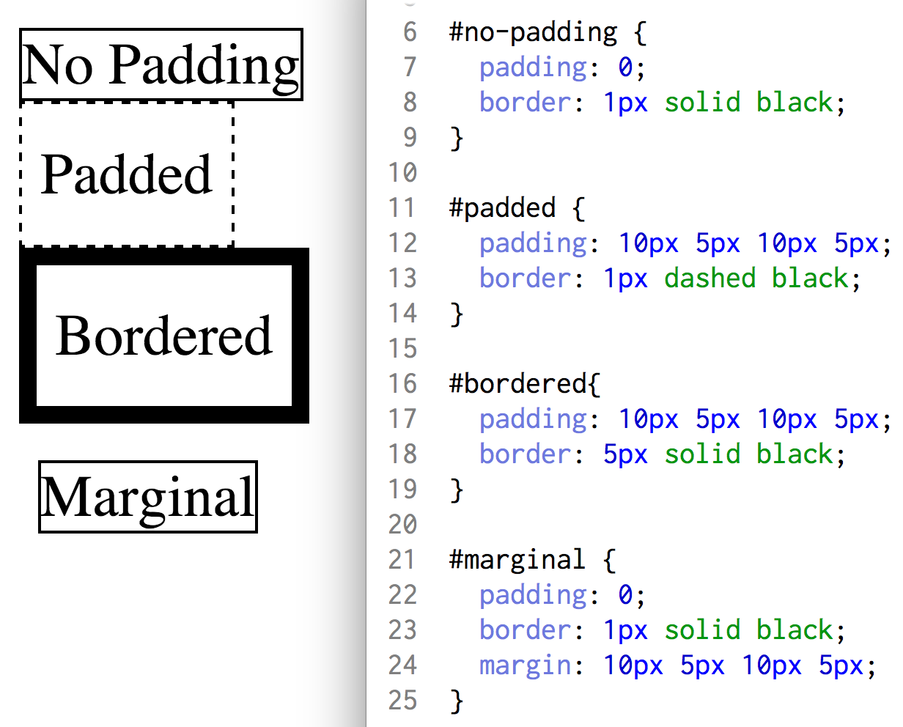

Margins, Borders, and Padding, Oh My!
A Picture is Worth a Thousand Words
Saturday, May 30, 2015
All elements on a webpage created with HTML, exist within an oftentimes unseen box. These layers, from the core element outward, are the padding, border, and margin of the element. All together they form a sort of matryoshka doll, or onion-like creation. Let’s start with a picture from W3Schools, and go from there:

In the above image, your element, or the content you want on a webpage, is in the middle. It could be a picture, a word, and entire paragraph, a wide variety of things. The important thing to know is, this isn’t all that will possibly be appearing on the site. Wrapped around that element is a layer, or padding, that lets the computer know how much space to put between your element and its border. The border itself, if you decide to have one be displayed, can be a single pixel wide or wider then the original element itself! Surrounding this border, similarly to how the padding surrounded the element, is the margin. Think of it as an element’s personal bubble. It wants to make sure anything else stays at least that far away from it. Not clear enough? No problem, this is something that pictures do a far better job of explaining, soon…another picture it is!
- In the first example above, the element (the words “No Padding”) is surrounded by a thin border without any padding to separate that border from the words themselves. This is why N and lowercase G appear to be touching to border.
- For the second example, padding was added and you can clearly see that all letters all well clear of the border. You might also notice that this particular element shares a border with the ones above and below it. It seems padding was no help there!
- Moving on to the third example, we kept the padding but thickened the border so you can more easily see just what space it occupies. You can see that despite being so thick, it still touches right up against the dashed border of “Padded” above it.
- Finally, we return to a padding free element that nevertheless is the only one of the bunch that isn’t touching the others! If you are paying extra close attention, you might also notice that the left-most edge of this one isn’t quite in-line with the others either. All of this is thanks to the element’s margin. The margin keeps the element a set distance away from other elements just like the padding kept the border away from the element itself.
Well, in far less than 1,000 words (though almost 2,500 if you count the pictures) you have margins, borders, and padding, or what is sometimes called the CSS box model. Should you ever find yourself with some elements that just aren’t lining up right, or are getting crowded by their borders, I hope this can help shed a little light on your problem!